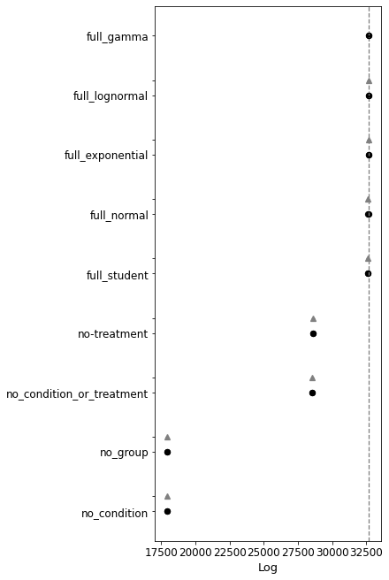

Compare to alternative models
Contents
Compare to alternative models¶
from bayes_window.generative_models import generate_fake_spikes
from bayes_window.model_comparison import *
from bayes_window import BayesWindow, BayesRegression, LMERegression, BayesConditions
df, df_monster, index_cols, firing_rates = generate_fake_spikes(n_trials=140,
n_neurons=10,
n_mice=8,
dur=7,
mouse_response_slope=20,
overall_stim_response_strength=4)
Bayesian¶
window = BayesRegression(df=df, y='isi', treatment='stim', group='mouse', condition='neuron')
window.fit(model=models.model_hierarchical, do_mean_over_trials=True,)
window.explore_models()

| rank | loo | p_loo | d_loo | weight | se | dse | warning | loo_scale | |
|---|---|---|---|---|---|---|---|---|---|
| full_gamma | 0 | 32682.539769 | 10.218112 | 0.000000 | 2.098871e-01 | 84.574023 | 0.000000 | False | log |
| full_lognormal | 1 | 32675.996306 | 10.075258 | 6.543463 | 2.014462e-01 | 85.727711 | 120.290167 | False | log |
| full_exponential | 2 | 32674.510397 | 10.205030 | 8.029372 | 2.178374e-01 | 87.600528 | 121.822053 | False | log |
| full_normal | 3 | 32626.496626 | 10.351264 | 56.043143 | 1.928634e-01 | 87.418404 | 121.445111 | False | log |
| full_student | 4 | 32568.623946 | 10.514633 | 113.915823 | 1.810493e-01 | 90.958744 | 123.886180 | False | log |
| no-treatment | 5 | 28590.554648 | 1.952379 | 4091.985121 | 3.801839e-04 | 76.541851 | 113.972350 | False | log |
| no_condition_or_treatment | 6 | 28560.210721 | 1.850343 | 4122.329048 | 3.789740e-04 | 75.967954 | 113.577487 | False | log |
| no_group | 7 | 17914.078009 | 0.721915 | 14768.461760 | 3.574336e-07 | 58.466185 | 102.942507 | False | log |
| no_condition | 8 | 17913.669329 | 0.738353 | 14768.870440 | 0.000000e+00 | 58.383048 | 103.637447 | False | log |
Linear mixed effects model¶
window = LMERegression(df=df, y='isi', treatment='stim', group='mouse', condition='neuron_x_mouse')
window.fit()
window.fit_anova()
window.posterior
Using formula isi ~ (1|mouse) + stim| neuron_x_mouse__0 + stim|neuron_x_mouse__1 + stim|neuron_x_mouse__2 + stim|neuron_x_mouse__3 + stim|neuron_x_mouse__4 + stim|neuron_x_mouse__5 + stim|neuron_x_mouse__6 + stim|neuron_x_mouse__7 + stim|neuron_x_mouse__8 + stim|neuron_x_mouse__9 + stim|neuron_x_mouse__10 + stim|neuron_x_mouse__11 + stim|neuron_x_mouse__12 + stim|neuron_x_mouse__13 + stim|neuron_x_mouse__14 + stim|neuron_x_mouse__15 + stim|neuron_x_mouse__16 + stim|neuron_x_mouse__17 + stim|neuron_x_mouse__18 + stim|neuron_x_mouse__19 + stim|neuron_x_mouse__20 + stim|neuron_x_mouse__21 + stim|neuron_x_mouse__22 + stim|neuron_x_mouse__23 + stim|neuron_x_mouse__24 + stim|neuron_x_mouse__25 + stim|neuron_x_mouse__26 + stim|neuron_x_mouse__27 + stim|neuron_x_mouse__28 + stim|neuron_x_mouse__29 + stim|neuron_x_mouse__30 + stim|neuron_x_mouse__31 + stim|neuron_x_mouse__32 + stim|neuron_x_mouse__33 + stim|neuron_x_mouse__34 + stim|neuron_x_mouse__35 + stim|neuron_x_mouse__36 + stim|neuron_x_mouse__37 + stim|neuron_x_mouse__38 + stim|neuron_x_mouse__39 + stim|neuron_x_mouse__40 + stim|neuron_x_mouse__41 + stim|neuron_x_mouse__42 + stim|neuron_x_mouse__43 + stim|neuron_x_mouse__44 + stim|neuron_x_mouse__45 + stim|neuron_x_mouse__46 + stim|neuron_x_mouse__47 + stim|neuron_x_mouse__48 + stim|neuron_x_mouse__49 + stim|neuron_x_mouse__50 + stim|neuron_x_mouse__51 + stim|neuron_x_mouse__52 + stim|neuron_x_mouse__53 + stim|neuron_x_mouse__54 + stim|neuron_x_mouse__55 + stim|neuron_x_mouse__56 + stim|neuron_x_mouse__57 + stim|neuron_x_mouse__58 + stim|neuron_x_mouse__59 + stim|neuron_x_mouse__60 + stim|neuron_x_mouse__61 + stim|neuron_x_mouse__62 + stim|neuron_x_mouse__63 + stim|neuron_x_mouse__64 + stim|neuron_x_mouse__65 + stim|neuron_x_mouse__66 + stim|neuron_x_mouse__67 + stim|neuron_x_mouse__68 + stim|neuron_x_mouse__69 + stim|neuron_x_mouse__70 + stim|neuron_x_mouse__71 + stim|neuron_x_mouse__72 + stim|neuron_x_mouse__73 + stim|neuron_x_mouse__74 + stim|neuron_x_mouse__75 + stim|neuron_x_mouse__76 + stim|neuron_x_mouse__77 + stim|neuron_x_mouse__78 + stim|neuron_x_mouse__79
/home/m/anaconda3/envs/dj/lib/python3.8/site-packages/statsmodels/regression/mixed_linear_model.py:2237: ConvergenceWarning: The MLE may be on the boundary of the parameter space.
warnings.warn(msg, ConvergenceWarning)
Coef. Std.Err. z P>|z| [0.025 0.975]
Intercept 0.081 0.004 21.895 0.000 0.074 0.088
1 | mouse -0.004 0.001 -4.460 0.000 -0.005 -0.002
stim | neuron_x_mouse__0 -0.003 0.001 -3.634 0.000 -0.005 -0.001
stim | neuron_x_mouse__1 -0.008 0.001 -9.634 0.000 -0.010 -0.006
stim | neuron_x_mouse__2 -0.010 0.001 -11.919 0.000 -0.012 -0.008
... ... ... ... ... ... ...
stim | neuron_x_mouse__76 0.003 0.001 3.079 0.002 0.001 0.004
stim | neuron_x_mouse__77 -0.001 0.001 -1.238 0.216 -0.003 0.001
stim | neuron_x_mouse__78 -0.005 0.001 -5.650 0.000 -0.006 -0.003
stim | neuron_x_mouse__79 -0.007 0.001 -8.779 0.000 -0.009 -0.006
Group Var 0.000 0.002
[83 rows x 6 columns]
isi~stim
sum_sq df F PR(>F)
stim 0.0 1.0 54.1 0.0
Residual 0.0 14.0 NaN NaN
| neuron_x_mouse | center interval | Std.Err. | z | p | higher interval | lower interval | zero | |
|---|---|---|---|---|---|---|---|---|
| 0 | 0 | -0.003 | 0.001 | -3.634 | 0.000 | -0.005 | -0.001 | 0 |
| 1 | 1 | -0.008 | 0.001 | -9.634 | 0.000 | -0.010 | -0.006 | 0 |
| 2 | 2 | -0.010 | 0.001 | -11.919 | 0.000 | -0.012 | -0.008 | 0 |
| 3 | 3 | -0.016 | 0.001 | -18.903 | 0.000 | -0.017 | -0.014 | 0 |
| 4 | 4 | -0.019 | 0.001 | -22.785 | 0.000 | -0.021 | -0.017 | 0 |
| ... | ... | ... | ... | ... | ... | ... | ... | ... |
| 75 | 75 | 0.007 | 0.001 | 8.115 | 0.000 | 0.005 | 0.008 | 0 |
| 76 | 76 | 0.003 | 0.001 | 3.079 | 0.002 | 0.001 | 0.004 | 0 |
| 77 | 77 | -0.001 | 0.001 | -1.238 | 0.216 | -0.003 | 0.001 | 0 |
| 78 | 78 | -0.005 | 0.001 | -5.650 | 0.000 | -0.006 | -0.003 | 0 |
| 79 | 79 | -0.007 | 0.001 | -8.779 | 0.000 | -0.009 | -0.006 | 0 |
80 rows × 8 columns
window.plot(x='neuron_x_mouse')
Simple one-way ANOVA:
window.fit_anova()
isi~stim
sum_sq df F PR(>F)
stim 0.0 1.0 54.1 0.0
Residual 0.0 14.0 NaN NaN
True
Of course in reality, neurons don’t have this consistent variation in each mouse. This would only be applicable to a priori classes of neurons